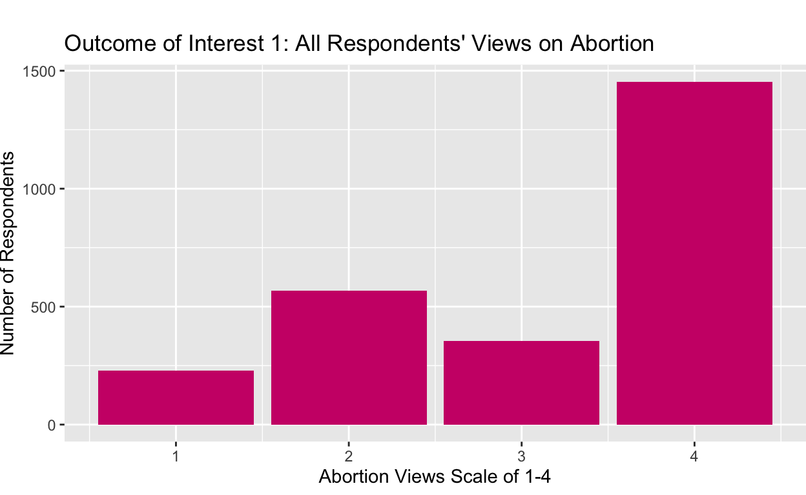
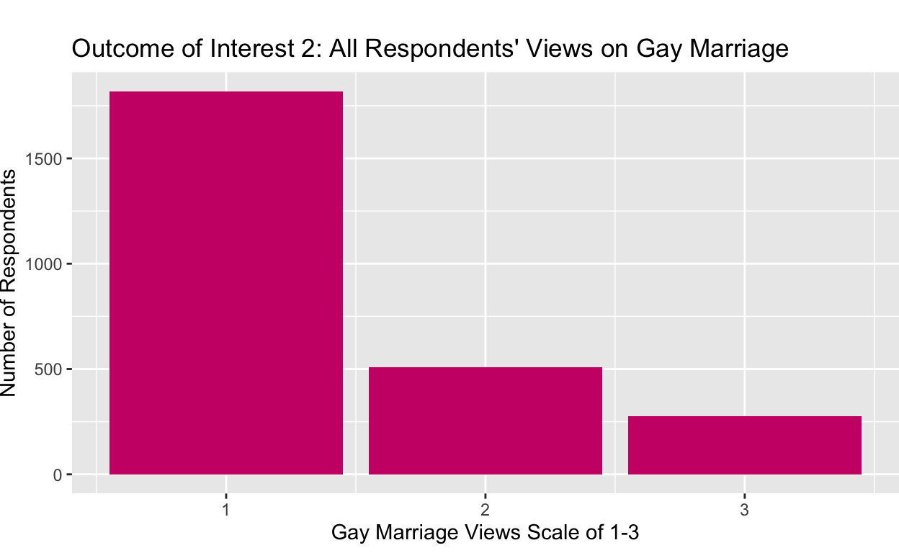
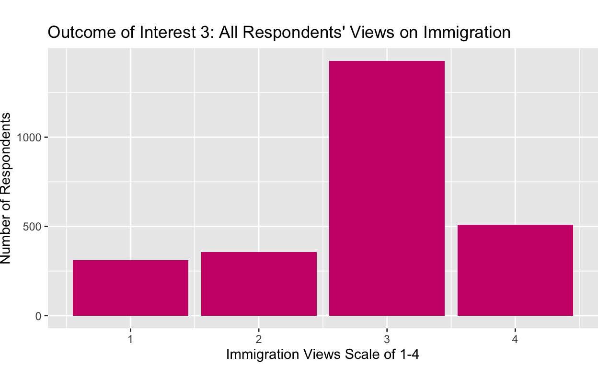
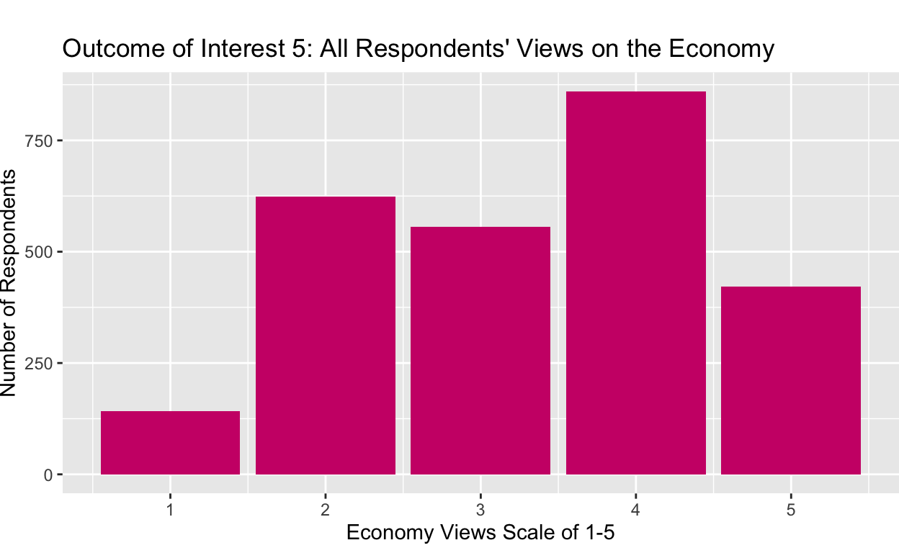
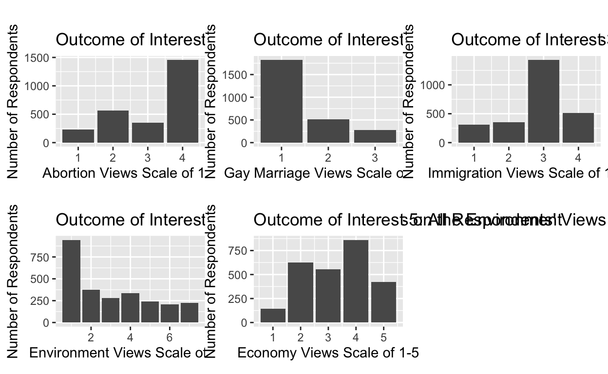
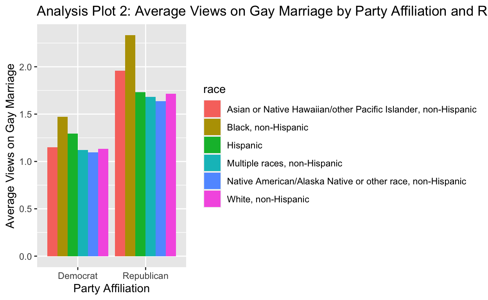
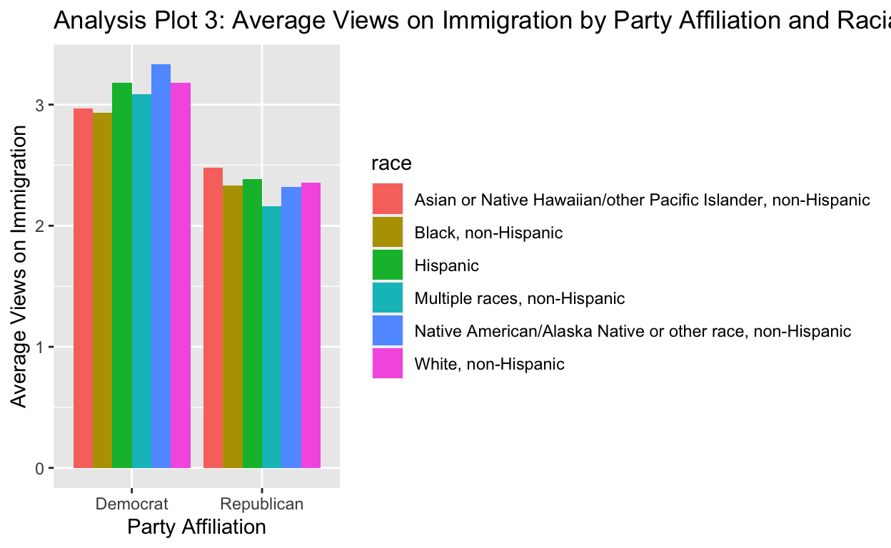

INTRODUCTION:
My research question is: “Do Democrat and Republican views on 5 major social issues differ by racial group?” My hypothesis is that yes, Democrat and Republican views on 5 major social issues will differ by racial group. For this project, the five key social issues I am investigating are abortion, LGBTQ+ rights, immigration, the environment, and the economy. The racial groups I am investigating are “White, non-Hispanic,” “Black, non-Hispanic,” “Hispanic,” “Asian or Native Hawaiian/other Pacific Islander, non-Hispanic,” and “Multiple races, non-Hispanic.” Additionally, I will use the two major parties, Democrats and Republicans, for my analysis. A lot of public opinion research collects respondents’ race, and responses are often analyzed through that lens. Given the history of racial polarization in the United States, analyzing different racial groups’ opinions can reveal interesting contrasts. However, I have not observed many analyses on racial differences within party groups. This is nonetheless significant, given that politicians spend considerable time targeting key racial demographics in elections. This analysis is particularly relevant given the upcoming presidential election in 2024. Additionally, the United States population is rapidly diversifying, so politicians will have no choice but to identify the needs and values of key racial demographic groups. Party players will no longer be able to take advantage of the fact that certain racial groups have historically voted for their party. I hope that my analysis will reveal nuances within party lines and across racial groups that may inspire more comprehensive research in this area.
Data - Organizing, Mutating, and Labeling
My data comes from the American National Election Studies 2020 Time Series study. This source is a public opinion survey of over 8,000 Americans in 2020 about a number of different topics. Party affiliation and race are self-reported in the survey.
I am measuring respondents’ views on my five key social issues based on the following survey questions.
Abortion Question: There has been some discussion about abortion during recent years. Which one of the opinions on this page best agrees with your view? Response options: 1 (By law, abortion should never be permitted) through 4 (By law, a woman should always be able to obtain an abortion as a matter of personal choice).
LGBTQ+ Rights Question: Which comes closest to your view [on gay marriage]? You can just tell me the number of your choice. Response options: 1 (Gay and lesbian couples should be allowed to legally marry) through 3 (There should be no legal recognition of gay or lesbian couples’ relationship).
Immigration Question: Which comes closest to your view about what government policy should be toward unauthorized immigrants now living in the United States? Response options: 1 (Make all unauthorized immigrants felons and send them back to their home country) through 4 (Allow unauthorized immigrants to remain in US & eventually qualify for citizenship without penalties).
Environment Question: Where would you place yourself on this scale, or haven’t you thought much about this? Response options: 1 (Tougher regulations on business needed to protect environment) through 7 (Regulations to protect environment already too much a burden on business).
Economy Question: What do you think about the state of the economy these days in the United States? Would you say the state of the economy is very good,good, neither good nor bad, bad, or very bad? Response options: 1(Very good) through 5 (Very bad).
While these categories may not entirely reflect of respondents’ views on a given issue, they offer a solid foundation to reveal potential differences by race and party.
The research design for this study is cross-sectional.
My dependent variable summaries are below, with barplots with the numbers of participants that responded to the survey in a given way for each social issue.
Show code
voting_trends_2020 <- read_csv("anes_timeseries_2020_csv_20220210.csv")Show code
voting_trends_2020 <- voting_trends_2020 |>
select(V201549x, V201336, V201416, V201417, V201262, V201324, V201018, V201510, V201600) |>
filter(
V201549x >= 1,
V201018 == 1 | V201018 == 2,
V201336 %in% c(1,2,3,4),
V201416 >= 1,
V201417 >= 1,
V201262 %in% c(1, 2, 3, 4, 5, 6, 7),
V201324 >= 1,
V201510 %in% c(1, 2, 3, 4, 5, 6, 7, 8),
V201600 >= 1
)Show code
voting_trends <- voting_trends_2020 |>
rename(
race_num = V201549x,
abortion_views = V201336,
lgbtq_views = V201416,
immigration_views = V201417,
environment_views = V201262,
economy_views = V201324,
party = V201018,
education_level = V201510,
gender = V201600
) |>
mutate(
race = case_when(
race_num == 1 ~ "White, non-Hispanic",
race_num == 2 ~ "Black, non-Hispanic",
race_num == 3 ~ "Hispanic",
race_num == 4 ~ "Asian or Native Hawaiian/other Pacific Islander, non-Hispanic",
race_num == 5 ~ "Native American/Alaska Native or other race, non-Hispanic",
race_num == 6 ~ "Multiple races, non-Hispanic"
),
party = if_else(party == 1, "Democrat", "Republican"),
gender = if_else(gender == 1, "Male", "Female"),
education_level = case_when(
education_level == 1 ~ "Less than high school",
education_level == 2 ~ "High school graduate",
education_level == 3 ~ "Some college but no degree",
education_level == 4 ~ "Associate degree in college - vocational",
education_level == 5 ~ "Associate degree in college - academic",
education_level == 6 ~ "Bachelor's degree",
education_level == 7 ~ "Master's degree",
education_level == 8 ~ "Professional school degree/doctoral degree"
)
)Data - Outcomes of Interest
This Outcome of Interest 1 plot visualizes the counts of respondents who answered 1 - 4 when asked “There has been some discussion about abortion during recent years. Which one of the opinions on this page best agrees with your view?” This plot demonstrates that, regardless of party or race, most respondents chose 4 indicating that they do support a woman’s right to bodily autonomy.
Show code
voting_trends_dependent_abortion <- voting_trends |>
ggplot(mapping = aes(x = abortion_views)) +
geom_bar() +
labs(
x = "Abortion Views Scale of 1-4",
y = "Number of Respondents",
title = "Outcome of Interest 1: All Respondents' Views on Abortion"
) +theme(plot.margin = margin(t = 20, b = 5, unit = "pt"))
voting_trends_dependent_abortion
This Outcome of Interest 2 plot visualizes the counts of respondents who answered 1 - 3 when asked “Which comes closest to your view [on gay marriage]?” This plot demonstrates that, regardless of party or race, most respondents chose 1 which suggests that they believe gay and lesbian couples should indeed be allowed to marry.
Show code
voting_trends_dependent_lgbtq <- voting_trends |>
ggplot(mapping = aes(x = lgbtq_views)) +
geom_bar() +
labs(
x = "Gay Marriage Views Scale of 1-3",
y = "Number of Respondents",
title = "Outcome of Interest 2: All Respondents' Views on Gay Marriage"
) +theme(plot.margin = margin(t = 20, b = 5, unit = "pt"))
voting_trends_dependent_lgbtq
This Outcome of Interest 3 plot shows the number of respondents who answered 1 - 4 when asked “Which comes closest to your view about what government policy should be toward unauthorized immigrants now living in the United States?” This plot shows that, without our key independent variables of race and party, most respondents chose 3 which indicates that they believe the US should “Allow unauthorized immigrants to remain in US & eventually qualify for citizenship but only if they meet requirements.”
Show code
voting_trends_dependent_immigration <- voting_trends |>
ggplot(mapping = aes(x = immigration_views)) +
geom_bar() +
labs(
x = "Immigration Views Scale of 1-4",
y = "Number of Respondents",
title = "Outcome of Interest 3: All Respondents' Views on Immigration"
) +theme(plot.margin = margin(t = 20, b = 5, unit = "pt"))
voting_trends_dependent_immigration
This Outcome of Interest 4 plot shows the number of respondents who answered 1 - 7 when asked “Where would you place yourself on this scale, or haven’t you thought much about this?” when asked about the tradeoff between supporting the environment and supporting businesses. This plot shows that, without our key independent variables of race and party, most respondents chose 1 which shows they believe that “Tougher regulations on business [are] needed to protect environment.”
Show code
voting_trends_dependent_environment <- voting_trends |>
ggplot(mapping = aes(x = environment_views)) +
geom_bar() +
labs(
x = "Environment Views Scale of 1-7",
y = "Number of Respondents",
title = "Outcome of Interest 4: All Respondents' Views on the Environment"
) +theme(plot.margin = margin(t = 20, b = 5, unit = "pt"))
voting_trends_dependent_environment
Finally, this Outcome of Interest 5 plot depicts the number of respondents who answered 1 - 5 when asked “What do you think about the state of the economy these days in the United States? Would you say the state of the economy is very good,good, neither good nor bad, bad, or very bad?” This plot shows that answers ranged widely, but most respondents chose 4 regardless of race or party, which shows that they believe the current state of economy is “bad.” Note that this survey was taken in 2020 during a time of significant social and economic turmoil in the United States (and the world) due to the COVID-19 pandemic and racial tensions.
Show code
voting_trends_dependent_economy <- voting_trends |>
ggplot(mapping = aes(x = economy_views)) +
geom_bar() +
labs(
x = "Economy Views Scale of 1-5",
y = "Number of Respondents",
title = "Outcome of Interest 5: All Respondents' Views on the Economy"
) +theme(plot.margin = margin(t = 20, b = 5, unit = "pt"))
voting_trends_dependent_economy
Show code

Results - Key Plots
My results include a table and bar plots of respondents’ average views on abortion by party and racial group, as well as regressions of of each social issue with race, party, and the confounders of education level and gender.
Show code
voting_tibble <- voting_trends |>
group_by(party, race) |>
summarize(
avg_abortion = mean(abortion_views),
avg_lgbtq = mean(lgbtq_views),
avg_immigration = mean(immigration_views),
avg_environment = mean(environment_views),
avg_economy = mean(economy_views)
)
knitr::kable(voting_tibble,
col.names = c("Party Affiliation", "Racial Group", "Average Views on Abortion", "Average Views on Gay Marriage", "Average Views on Immigration", "Average Views on the Environment", "Average Views on the Economy"))| Party Affiliation | Racial Group | Average Views on Abortion | Average Views on Gay Marriage | Average Views on Immigration | Average Views on the Environment | Average Views on the Economy |
|---|---|---|---|---|---|---|
| Democrat | Asian or Native Hawaiian/other Pacific Islander, non-Hispanic | 3.746269 | 1.149254 | 2.970149 | 2.477612 | 3.492537 |
| Democrat | Black, non-Hispanic | 3.504951 | 1.470297 | 2.930693 | 2.391089 | 3.811881 |
| Democrat | Hispanic | 3.364197 | 1.296296 | 3.179012 | 1.956790 | 3.827161 |
| Democrat | Multiple races, non-Hispanic | 3.672414 | 1.120690 | 3.086207 | 1.758621 | 3.913793 |
| Democrat | Native American/Alaska Native or other race, non-Hispanic | 3.476190 | 1.095238 | 3.333333 | 2.047619 | 4.142857 |
| Democrat | White, non-Hispanic | 3.680193 | 1.132367 | 3.181643 | 1.938164 | 3.806763 |
| Republican | Asian or Native Hawaiian/other Pacific Islander, non-Hispanic | 2.608696 | 1.956522 | 2.478261 | 3.956522 | 3.304348 |
| Republican | Black, non-Hispanic | 1.666667 | 2.333333 | 2.333333 | 4.333333 | 2.833333 |
| Republican | Hispanic | 2.450000 | 1.733333 | 2.383333 | 4.483333 | 2.583333 |
| Republican | Multiple races, non-Hispanic | 2.480000 | 1.680000 | 2.160000 | 4.320000 | 2.960000 |
| Republican | Native American/Alaska Native or other race, non-Hispanic | 2.500000 | 1.636364 | 2.318182 | 4.454546 | 2.318182 |
| Republican | White, non-Hispanic | 2.498375 | 1.713976 | 2.358613 | 4.514626 | 2.553629 |
Analysis Plot 1 shows respondents’ average views on abortion for each party by racial group and party. COME BACK AND EXPLAIN EACH OF THESE.
Show code

Analysis Plot 2 shows respondents’ average views on gay marriage for each party by racial group and party.
Show code

Analysis Plot 3 shows respondents’ average views on immigration for each party by racial group and party.
Show code
immigration_plot <- voting_tibble |>
ggplot(mapping = aes(x = party, y = avg_immigration, fill = race)) +
geom_col(position = "dodge") +
labs(x = "Party Affiliation",
y = "Average Views on Immigration",
title = "Analysis Plot 3: Average Views on Immigration by Party Affiliation and Racial Group")
immigration_plotAnalysis Plot 4 shows respondents’ average views on the environment for each party by racial group and party.
Show code
environment_plot <- voting_tibble |>
ggplot(mapping = aes(x = party, y = avg_environment, fill = race)) +
geom_col(position = "dodge") +
labs(x = "Party Affiliation",
y = "Average Views on the Environment",
title = "Analysis Plot 4: Average Views on the Environment by Party Affiliation and Racial Group")
environment_plot
Analysis Plot 5 shows respondents’ average views on the economy for each party by racial group and party.
MAKE SURE TO ROUND NUMBERSShow code
economy_plot <- voting_tibble |>
ggplot(mapping = aes(x = party, y = avg_economy, fill = race)) +
geom_col(position = "dodge") +
labs(x = "Party Affiliation",
y = "Average Views on the Economy",
title = "Analysis Plot 5: Average Views on the Economy by Party Affiliation and Racial Group")
economy_plot
Results - Key Regressions
Show code
rep_voting_trends <- voting_trends |>
filter(
party == "Republican"
) |>
mutate(
race3 = case_when(
race_num == 1 ~ "White, non-Hispanic",
race_num == 2 ~ "Black, non-Hispanic",
race_num == 3 ~ "Hispanic",
race_num == 4 ~ "Asian",
race_num == 5 ~ "Native American",
race_num == 6 ~ "Multiple races"
))Show code
For my regressions, I split my voting_trends data into views on each social issue among Democrats and Republicans, respectively. I then created two separate regressions for respondents’ views on abortion, LGBTQ+ rights, immigration, the environment, and the economy for each party. In the regression, I analyzed respondents’ views as the dependent variable, race as the independent variable, while controlling for educational level and gender. My analysis of each of the regressions is below.
This first regression demonstrates Democrats’ average views on abortion in the context of respondents’ race, while controlling for educational level and gender. The second regression shows the same, but for Republican views on abortion. As a reminder, a response of 1 means that abortion should never be permitted, and a response of 4 means that a woman should always be able to obtain an abortion. Thus, responses closer to 1 are the more conservative responses while responses closer to 4 are the more liberal ones.
Comparing the regressions reveals the following outcomes:
Being a Democrat increases the average views of Black respondents on abortion by 1.823 as compared to Black Republicans, keeping educational level and gender constant.
Being a Democrat increases the average views of Hispanic respondents on abortion by 0.867 as compared to Hispanic Republicans, keeping educational level and gender constant.
Being a Democrat increases the average views of Native American respondents on abortion by 0.938 as compared to Native American Republicans, keeping educational level and gender constant.
Being a Democrat increases the average views of White respondents on abortion by 1.06 as compared to White Republicans, keeping educational level and gender constant.
Being a Democrat increases the average views of Asian American respondents on abortion by 0.955 as compared to Asian American Republicans, keeping educational level and gender constant.
**INCLUDE SIGNIFICANCES
Abortion Regression - Democrats
Show code
abortion_regression_dem <- lm(abortion_views ~ race2 + education_level + gender, data = dem_voting_trends)
modelsummary::modelsummary(abortion_regression_dem,
statistic = c("s.e. = {std.error}",
"p = {p.value}"),
gof_map = c("nobs", "r.squared", "adj.r.squared"),
coef_rename = c(
"(Intercept)" = "Intercept",
"race2Black, non-Hispanic" = "Black, non-Hispanic",
"race2Hispanic" = "Hispanic",
"race2Multiple races" = "Multiple races, non-Hispanic",
"race2Native American" = "Native American/Alaska Native or other race, non-Hispanic",
"race2White, non-Hispanic" = "White, non-Hispanic",
"education_levelAssociate degree in college - vocational" = "Associate's degree in college - vocational",
"education_levelBachelor's degree" = "Bachelor's degree",
"education_levelHigh school graduate" = "High school graduate",
"education_levelLess than high school" = "Less than high school",
"education_levelMaster's degree" = "Master's degree",
"education_levelProfessional school degree/doctoral degree" = "Professional school/doctoral degree",
"education_levelSome college but no degree" = "Some college, but no degree",
"genderMale" = "Male"
)
)| (1) | |
|---|---|
| Intercept | 3.656 |
| s.e. = 0.124 | |
| p = <0.001 | |
| Black, non-Hispanic | −0.093 |
| s.e. = 0.107 | |
| p = 0.381 | |
| Hispanic | −0.236 |
| s.e. = 0.109 | |
| p = 0.031 | |
| Multiple races, non-Hispanic | 0.007 |
| s.e. = 0.134 | |
| p = 0.960 | |
| Native American/Alaska Native or other race, non-Hispanic | −0.150 |
| s.e. = 0.187 | |
| p = 0.423 | |
| White, non-Hispanic | −0.004 |
| s.e. = 0.094 | |
| p = 0.970 | |
| Associate’s degree in college - vocational | −0.284 |
| s.e. = 0.115 | |
| p = 0.013 | |
| Bachelor’s degree | 0.131 |
| s.e. = 0.089 | |
| p = 0.143 | |
| High school graduate | −0.320 |
| s.e. = 0.098 | |
| p = 0.001 | |
| Less than high school | −0.536 |
| s.e. = 0.130 | |
| p = <0.001 | |
| Master’s degree | 0.160 |
| s.e. = 0.093 | |
| p = 0.086 | |
| Professional school/doctoral degree | 0.222 |
| s.e. = 0.106 | |
| p = 0.036 | |
| Some college, but no degree | 0.034 |
| s.e. = 0.094 | |
| p = 0.715 | |
| Male | −0.025 |
| s.e. = 0.039 | |
| p = 0.521 | |
| Num.Obs. | 1545 |
| R2 | 0.085 |
| R2 Adj. | 0.078 |
Abortion Regression - Republicans
Show code
abortion_regression_rep <- lm(abortion_views ~ race3 + education_level + gender, data = rep_voting_trends)
modelsummary::modelsummary(abortion_regression_rep,
statistic = c("s.e. = {std.error}",
"p = {p.value}"),
gof_map = c("nobs", "r.squared", "adj.r.squared"),
coef_rename = c(
"(Intercept)" = "Intercept",
"race2Black, non-Hispanic" = "Black, non-Hispanic",
"race2Hispanic" = "Hispanic",
"race2Multiple races" = "Multiple races, non-Hispanic",
"race2Native American" = "Native American/Alaska Native or other race, non-Hispanic",
"race2White, non-Hispanic" = "White, non-Hispanic",
"education_levelAssociate degree in college - vocational" = "Associate's degree in college - vocational",
"education_levelBachelor's degree" = "Bachelor's degree",
"education_levelHigh school graduate" = "High school graduate",
"education_levelLess than high school" = "Less than high school",
"education_levelMaster's degree" = "Master's degree",
"education_levelProfessional school degree/doctoral degree" = "Professional school/doctoral degree",
"education_levelSome college but no degree" = "Some college, but no degree",
"genderMale" = "Male"
)
)| (1) | |
|---|---|
| Intercept | 2.701 |
| s.e. = 0.255 | |
| p = <0.001 | |
| race3Black, non-Hispanic | −0.961 |
| s.e. = 0.477 | |
| p = 0.044 | |
| race3Hispanic | −0.148 |
| s.e. = 0.256 | |
| p = 0.564 | |
| race3Multiple races | −0.142 |
| s.e. = 0.300 | |
| p = 0.636 | |
| race3Native American | −0.133 |
| s.e. = 0.311 | |
| p = 0.670 | |
| race3White, non-Hispanic | −0.109 |
| s.e. = 0.220 | |
| p = 0.620 | |
| Associate’s degree in college - vocational | −0.030 |
| s.e. = 0.169 | |
| p = 0.859 | |
| Bachelor’s degree | −0.064 |
| s.e. = 0.136 | |
| p = 0.639 | |
| High school graduate | −0.164 |
| s.e. = 0.150 | |
| p = 0.275 | |
| Less than high school | 0.003 |
| s.e. = 0.215 | |
| p = 0.988 | |
| Master’s degree | 0.028 |
| s.e. = 0.152 | |
| p = 0.853 | |
| Professional school/doctoral degree | 0.056 |
| s.e. = 0.198 | |
| p = 0.776 | |
| Some college, but no degree | −0.162 |
| s.e. = 0.140 | |
| p = 0.248 | |
| Male | −0.038 |
| s.e. = 0.064 | |
| p = 0.560 | |
| Num.Obs. | 1059 |
| R2 | 0.009 |
| R2 Adj. | −0.003 |
The first regression shows Democrats’ average views on gay marriage in the context of the respondents’ race, while controlling for educational level and gender. The second regression shows the same, but for Republican views on gay marriage. In this case, a response of 1 means that a respondent supports gay marriage while a response of 3 means that a respondent does not support it. Therefore, as responses decrease and get closer to 1, they are the more liberal view and while responses increase closer to 3 they are more conservative.
Comparing the regressions reveals the following outcomes:
Being a Republican increases the average views of Black respondents on gay marriage by 0.833 as compared to Black Democrats, keeping educational level and gender constant.
Being a Republican increases the average views of Hispanic respondents on gay marriage by 0.398 as compared to Hispanic Democrats, keeping educational level and gender constant.
Being a Republican increases the average views of Native American respondents on gay marriage by 0.527 as compared to Native American Democrats, keeping educational level and gender constant.
Being a Republican increases the average views of White respondents on gay marriage by 0.519 as compared to White Democrats, keeping educational level and gender constant.
Being a Republican increases the average views of Asian American respondents on gay marriage by 0.712 as compared to Asian American Democrats, keeping educational level and gender constant.
LGBTQ Regression - Democrats
Show code
lgbtq_regression_dem <- lm(lgbtq_views ~ race2 + education_level + gender, data = dem_voting_trends)
modelsummary::modelsummary(lgbtq_regression_dem,
statistic = c("s.e. = {std.error}",
"p = {p.value}"),
gof_map = c("nobs", "r.squared", "adj.r.squared"),
coef_rename = c(
"(Intercept)" = "Intercept",
"race2Black, non-Hispanic" = "Black, non-Hispanic",
"race2Hispanic" = "Hispanic",
"race2Multiple races" = "Multiple races, non-Hispanic",
"race2Native American" = "Native American/Alaska Native or other race, non-Hispanic",
"race2White, non-Hispanic" = "White, non-Hispanic",
"education_levelAssociate degree in college - vocational" = "Associate's degree in college - vocational",
"education_levelBachelor's degree" = "Bachelor's degree",
"education_levelHigh school graduate" = "High school graduate",
"education_levelLess than high school" = "Less than high school",
"education_levelMaster's degree" = "Master's degree",
"education_levelProfessional school degree/doctoral degree" = "Professional school/doctoral degree",
"education_levelSome college but no degree" = "Some college, but no degree",
"genderMale" = "Male"
)
)| (1) | |
|---|---|
| Intercept | 1.188 |
| s.e. = 0.079 | |
| p = <0.001 | |
| Black, non-Hispanic | 0.237 |
| s.e. = 0.068 | |
| p = <0.001 | |
| Hispanic | 0.059 |
| s.e. = 0.070 | |
| p = 0.398 | |
| Multiple races, non-Hispanic | −0.070 |
| s.e. = 0.086 | |
| p = 0.416 | |
| Native American/Alaska Native or other race, non-Hispanic | −0.119 |
| s.e. = 0.120 | |
| p = 0.321 | |
| White, non-Hispanic | −0.049 |
| s.e. = 0.060 | |
| p = 0.417 | |
| Associate’s degree in college - vocational | 0.068 |
| s.e. = 0.073 | |
| p = 0.356 | |
| Bachelor’s degree | −0.081 |
| s.e. = 0.057 | |
| p = 0.155 | |
| High school graduate | 0.205 |
| s.e. = 0.063 | |
| p = 0.001 | |
| Less than high school | 0.365 |
| s.e. = 0.083 | |
| p = <0.001 | |
| Master’s degree | −0.098 |
| s.e. = 0.059 | |
| p = 0.098 | |
| Professional school/doctoral degree | −0.121 |
| s.e. = 0.068 | |
| p = 0.076 | |
| Some college, but no degree | −0.022 |
| s.e. = 0.060 | |
| p = 0.720 | |
| Male | 0.050 |
| s.e. = 0.025 | |
| p = 0.046 | |
| Num.Obs. | 1545 |
| R2 | 0.114 |
| R2 Adj. | 0.106 |
LGBTQ Regression - Republicans
Show code
lgbtq_regression_rep <- lm(lgbtq_views ~ race3 + education_level + gender, data = rep_voting_trends)
modelsummary::modelsummary(lgbtq_regression_rep,
statistic = c("s.e. = {std.error}",
"p = {p.value}"),
gof_map = c("nobs", "r.squared", "adj.r.squared"),
coef_rename = c(
"(Intercept)" = "Intercept",
"race2Black, non-Hispanic" = "Black, non-Hispanic",
"race2Hispanic" = "Hispanic",
"race2Multiple races" = "Multiple races, non-Hispanic",
"race2Native American" = "Native American/Alaska Native or other race, non-Hispanic",
"race2White, non-Hispanic" = "White, non-Hispanic",
"education_levelAssociate degree in college - vocational" = "Associate's degree in college - vocational",
"education_levelBachelor's degree" = "Bachelor's degree",
"education_levelHigh school graduate" = "High school graduate",
"education_levelLess than high school" = "Less than high school",
"education_levelMaster's degree" = "Master's degree",
"education_levelProfessional school degree/doctoral degree" = "Professional school/doctoral degree",
"education_levelSome college but no degree" = "Some college, but no degree",
"genderMale" = "Male"
)
)| (1) | |
|---|---|
| Intercept | 1.900 |
| s.e. = 0.187 | |
| p = <0.001 | |
| race3Black, non-Hispanic | 0.358 |
| s.e. = 0.349 | |
| p = 0.305 | |
| race3Hispanic | −0.255 |
| s.e. = 0.187 | |
| p = 0.173 | |
| race3Multiple races | −0.284 |
| s.e. = 0.220 | |
| p = 0.198 | |
| race3Native American | −0.304 |
| s.e. = 0.228 | |
| p = 0.182 | |
| race3White, non-Hispanic | −0.242 |
| s.e. = 0.161 | |
| p = 0.134 | |
| Associate’s degree in college - vocational | −0.011 |
| s.e. = 0.124 | |
| p = 0.928 | |
| Bachelor’s degree | −0.004 |
| s.e. = 0.100 | |
| p = 0.968 | |
| High school graduate | 0.043 |
| s.e. = 0.110 | |
| p = 0.697 | |
| Less than high school | 0.292 |
| s.e. = 0.157 | |
| p = 0.063 | |
| Master’s degree | −0.112 |
| s.e. = 0.111 | |
| p = 0.312 | |
| Professional school/doctoral degree | 0.160 |
| s.e. = 0.145 | |
| p = 0.268 | |
| Some college, but no degree | 0.085 |
| s.e. = 0.103 | |
| p = 0.407 | |
| Male | 0.062 |
| s.e. = 0.047 | |
| p = 0.189 | |
| Num.Obs. | 1059 |
| R2 | 0.019 |
| R2 Adj. | 0.007 |
The following regressions depict respondents’ average views on immigration in the context of the respondents’ race, while controlling for educational level and gender. The first regression represents the average views of Democrat respondents, while the second represents the views of Republican respondents. In this case, a response of 1 means that the respondent believes the US should make unauthorized immigrants felons and send them back to their home country, and a response of 4 means that respondents believe unauthorized immigrants should be allowed to remain in the US and eventually qualify for citizenship without penalties. This means that responses with lower values that are closer to 1 are more conservative, while responses with higher values that are closer to 4 are more liberal.
Comparing the regressions reveals the following outcomes:
Being a Democrat increases the average views of Black respondents on immigration by 0.62 as compared to Black Republicans, keeping educational level and gender constant.
Being a Democrat increases the views of Hispanic respondents on immigration by 0.363 as compared to Hispanic Republicans, keeping educational level and gender constant.
Being a Democrat increases the views of Native American respondents on immigration by 1.093 as compared to Native American Republicans, keeping educational level and gender constant.
Being a Democrat increases views of White respondents on immigration by 0.81 as compared to White Republicans, keeping educational level and gender constant.
Being a Democrat increases the views of Asian American respondents on immigration by 0.436 as compared to Asian American Republicans, keeping educational level and gender constant.
[NOTE THAT IM REMOVING MULTIPLE RACES]
Immigration Regression - Democrats
Show code
immigration_regression_dem <- lm(immigration_views ~ race2 + education_level + gender, data = dem_voting_trends)
modelsummary::modelsummary(immigration_regression_dem,
statistic = c("s.e. = {std.error}",
"p = {p.value}"),
gof_map = c("nobs", "r.squared", "adj.r.squared"),
coef_rename = c(
"(Intercept)" = "Intercept",
"race2Black, non-Hispanic" = "Black, non-Hispanic",
"race2Hispanic" = "Hispanic",
"race2Multiple races" = "Multiple races, non-Hispanic",
"race2Native American" = "Native American/Alaska Native or other race, non-Hispanic",
"race2White, non-Hispanic" = "White, non-Hispanic",
"education_levelAssociate degree in college - vocational" = "Associate's degree in college - vocational",
"education_levelBachelor's degree" = "Bachelor's degree",
"education_levelHigh school graduate" = "High school graduate",
"education_levelLess than high school" = "Less than high school",
"education_levelMaster's degree" = "Master's degree",
"education_levelProfessional school degree/doctoral degree" = "Professional school/doctoral degree",
"education_levelSome college but no degree" = "Some college, but no degree",
"genderMale" = "Male"
)
)| (1) | |
|---|---|
| Intercept | 2.921 |
| s.e. = 0.116 | |
| p = <0.001 | |
| Black, non-Hispanic | 0.075 |
| s.e. = 0.100 | |
| p = 0.454 | |
| Hispanic | 0.322 |
| s.e. = 0.103 | |
| p = 0.002 | |
| Multiple races, non-Hispanic | 0.177 |
| s.e. = 0.126 | |
| p = 0.160 | |
| Native American/Alaska Native or other race, non-Hispanic | 0.465 |
| s.e. = 0.175 | |
| p = 0.008 | |
| White, non-Hispanic | 0.256 |
| s.e. = 0.088 | |
| p = 0.004 | |
| Associate’s degree in college - vocational | −0.219 |
| s.e. = 0.107 | |
| p = 0.042 | |
| Bachelor’s degree | 0.082 |
| s.e. = 0.084 | |
| p = 0.328 | |
| High school graduate | −0.286 |
| s.e. = 0.092 | |
| p = 0.002 | |
| Less than high school | −0.364 |
| s.e. = 0.122 | |
| p = 0.003 | |
| Master’s degree | 0.125 |
| s.e. = 0.087 | |
| p = 0.151 | |
| Professional school/doctoral degree | 0.267 |
| s.e. = 0.099 | |
| p = 0.007 | |
| Some college, but no degree | 0.012 |
| s.e. = 0.088 | |
| p = 0.888 | |
| Male | −0.058 |
| s.e. = 0.036 | |
| p = 0.109 | |
| Num.Obs. | 1545 |
| R2 | 0.070 |
| R2 Adj. | 0.062 |
Immigration Regression - Republicans
Show code
immigration_regression_rep <- lm(immigration_views ~ race3 + education_level + gender, data = rep_voting_trends)
modelsummary::modelsummary(immigration_regression_rep,
statistic = c("s.e. = {std.error}",
"p = {p.value}"),
gof_map = c("nobs", "r.squared", "adj.r.squared"),
coef_rename = c(
"(Intercept)" = "Intercept",
"race2Black, non-Hispanic" = "Black, non-Hispanic",
"race2Hispanic" = "Hispanic",
"race2Multiple races" = "Multiple races, non-Hispanic",
"race2Native American" = "Native American/Alaska Native or other race, non-Hispanic",
"race2White, non-Hispanic" = "White, non-Hispanic",
"education_levelAssociate degree in college - vocational" = "Associate's degree in college - vocational",
"education_levelBachelor's degree" = "Bachelor's degree",
"education_levelHigh school graduate" = "High school graduate",
"education_levelLess than high school" = "Less than high school",
"education_levelMaster's degree" = "Master's degree",
"education_levelProfessional school degree/doctoral degree" = "Professional school/doctoral degree",
"education_levelSome college but no degree" = "Some college, but no degree",
"genderMale" = "Male"
)
)| (1) | |
|---|---|
| Intercept | 2.485 |
| s.e. = 0.217 | |
| p = <0.001 | |
| race3Black, non-Hispanic | −0.109 |
| s.e. = 0.407 | |
| p = 0.789 | |
| race3Hispanic | −0.041 |
| s.e. = 0.218 | |
| p = 0.850 | |
| race3Multiple races | −0.321 |
| s.e. = 0.257 | |
| p = 0.212 | |
| race3Native American | −0.192 |
| s.e. = 0.265 | |
| p = 0.469 | |
| race3White, non-Hispanic | −0.118 |
| s.e. = 0.188 | |
| p = 0.529 | |
| Associate’s degree in college - vocational | 0.054 |
| s.e. = 0.144 | |
| p = 0.707 | |
| Bachelor’s degree | 0.096 |
| s.e. = 0.116 | |
| p = 0.410 | |
| High school graduate | −0.094 |
| s.e. = 0.128 | |
| p = 0.462 | |
| Less than high school | −0.162 |
| s.e. = 0.183 | |
| p = 0.377 | |
| Master’s degree | 0.227 |
| s.e. = 0.129 | |
| p = 0.080 | |
| Professional school/doctoral degree | 0.228 |
| s.e. = 0.169 | |
| p = 0.178 | |
| Some college, but no degree | −0.003 |
| s.e. = 0.120 | |
| p = 0.981 | |
| Male | −0.119 |
| s.e. = 0.055 | |
| p = 0.031 | |
| Num.Obs. | 1059 |
| R2 | 0.019 |
| R2 Adj. | 0.007 |
The first regression demonstrates Democrats’ average views on the environment in the context of respondents’ race while also controlling for educational level and gender. The second regression shows the same, but for Republican views on the environment. In regards to the issue of environment, a response that is decreasing or is closer to 1 means that tougher business regulations are needed to protect the environment, and responses that increase closer to 7 mean that regulations to the environment are already too much of a burden on businesses. This means that responses closer to 1 are more liberal, while responses closer to 7 are more conservative.
Comparing the regressions reveals the following outcomes:
Being a Republican increases the average views of Black respondents on the environment by 2.012 as compared to Black Democrats, keeping educational level and gender constant.
Being a Republican increases the average views of Hispanic respondents on the environment by 2.548 as compared to Hispanic Democrats, keeping educational level and gender constant.
Being a Republican increases the average views of Native American respondents on the environment by 2.475 as compared to Native American Democrats, keeping educational level and gender constant.
Being a Republican increases the average views of White respondents on the environment by 2.52 as compared to White Democrats, keeping educational level and gender constant.
Being a Republican increases the average views of Asian American respondents on the environment by 1.272 as compared to Asian American Democrats, keeping educational level and gender constant.
***GO BACK THROUGH FOR STATISTICAL SIGNIFICANCE
Environment Regression - Democrats
Show code
environment_regression_dem <- lm(environment_views ~ race2 + education_level + gender, data = dem_voting_trends)
modelsummary::modelsummary(environment_regression_dem,
statistic = c("s.e. = {std.error}",
"p = {p.value}"),
gof_map = c("nobs", "r.squared", "adj.r.squared"),
coef_rename = c(
"(Intercept)" = "Intercept",
"race2Black, non-Hispanic" = "Black, non-Hispanic",
"race2Hispanic" = "Hispanic",
"race2Multiple races" = "Multiple races, non-Hispanic",
"race2Native American" = "Native American/Alaska Native or other race, non-Hispanic",
"race2White, non-Hispanic" = "White, non-Hispanic",
"education_levelAssociate degree in college - vocational" = "Associate's degree in college - vocational",
"education_levelBachelor's degree" = "Bachelor's degree",
"education_levelHigh school graduate" = "High school graduate",
"education_levelLess than high school" = "Less than high school",
"education_levelMaster's degree" = "Master's degree",
"education_levelProfessional school degree/doctoral degree" = "Professional school/doctoral degree",
"education_levelSome college but no degree" = "Some college, but no degree",
"genderMale" = "Male"
)
)| (1) | |
|---|---|
| Intercept | 2.510 |
| s.e. = 0.234 | |
| p = <0.001 | |
| Black, non-Hispanic | −0.259 |
| s.e. = 0.202 | |
| p = 0.200 | |
| Hispanic | −0.689 |
| s.e. = 0.207 | |
| p = <0.001 | |
| Multiple races, non-Hispanic | −0.799 |
| s.e. = 0.254 | |
| p = 0.002 | |
| Native American/Alaska Native or other race, non-Hispanic | −0.599 |
| s.e. = 0.354 | |
| p = 0.091 | |
| White, non-Hispanic | −0.606 |
| s.e. = 0.178 | |
| p = <0.001 | |
| Associate’s degree in college - vocational | 0.490 |
| s.e. = 0.217 | |
| p = 0.024 | |
| Bachelor’s degree | −0.171 |
| s.e. = 0.169 | |
| p = 0.310 | |
| High school graduate | 0.591 |
| s.e. = 0.186 | |
| p = 0.002 | |
| Less than high school | 0.246 |
| s.e. = 0.246 | |
| p = 0.317 | |
| Master’s degree | −0.282 |
| s.e. = 0.176 | |
| p = 0.108 | |
| Professional school/doctoral degree | −0.427 |
| s.e. = 0.200 | |
| p = 0.033 | |
| Some college, but no degree | −0.112 |
| s.e. = 0.177 | |
| p = 0.528 | |
| Male | 0.267 |
| s.e. = 0.073 | |
| p = <0.001 | |
| Num.Obs. | 1545 |
| R2 | 0.068 |
| R2 Adj. | 0.060 |
Environment Regression - Republicans
Show code
environment_regression_rep <- lm(environment_views ~ race3 + education_level + gender, data = rep_voting_trends)
modelsummary::modelsummary(environment_regression_rep,
statistic = c("s.e. = {std.error}",
"p = {p.value}"),
gof_map = c("nobs", "r.squared", "adj.r.squared"),
coef_rename = c(
"(Intercept)" = "Intercept",
"race2Black, non-Hispanic" = "Black, non-Hispanic",
"race2Hispanic" = "Hispanic",
"race2Multiple races" = "Multiple races, non-Hispanic",
"race2Native American" = "Native American/Alaska Native or other race, non-Hispanic",
"race2White, non-Hispanic" = "White, non-Hispanic",
"education_levelAssociate degree in college - vocational" = "Associate's degree in college - vocational",
"education_levelBachelor's degree" = "Bachelor's degree",
"education_levelHigh school graduate" = "High school graduate",
"education_levelLess than high school" = "Less than high school",
"education_levelMaster's degree" = "Master's degree",
"education_levelProfessional school degree/doctoral degree" = "Professional school/doctoral degree",
"education_levelSome college but no degree" = "Some college, but no degree",
"genderMale" = "Male"
)
)| (1) | |
|---|---|
| Intercept | 3.782 |
| s.e. = 0.460 | |
| p = <0.001 | |
| race3Black, non-Hispanic | 0.481 |
| s.e. = 0.862 | |
| p = 0.577 | |
| race3Hispanic | 0.587 |
| s.e. = 0.462 | |
| p = 0.205 | |
| race3Multiple races | 0.372 |
| s.e. = 0.543 | |
| p = 0.493 | |
| race3Native American | 0.604 |
| s.e. = 0.562 | |
| p = 0.283 | |
| race3White, non-Hispanic | 0.642 |
| s.e. = 0.397 | |
| p = 0.106 | |
| Associate’s degree in college - vocational | −0.346 |
| s.e. = 0.305 | |
| p = 0.258 | |
| Bachelor’s degree | −0.127 |
| s.e. = 0.247 | |
| p = 0.607 | |
| High school graduate | −0.180 |
| s.e. = 0.271 | |
| p = 0.505 | |
| Less than high school | −0.510 |
| s.e. = 0.388 | |
| p = 0.189 | |
| Master’s degree | −0.432 |
| s.e. = 0.274 | |
| p = 0.115 | |
| Professional school/doctoral degree | −0.392 |
| s.e. = 0.358 | |
| p = 0.273 | |
| Some college, but no degree | −0.052 |
| s.e. = 0.253 | |
| p = 0.837 | |
| Male | 0.536 |
| s.e. = 0.117 | |
| p = <0.001 | |
| Num.Obs. | 1059 |
| R2 | 0.026 |
| R2 Adj. | 0.014 |
These two regressions depict survey respondents’ average views on the economy in the context of respondents’ race while also controlling for educational level and gender. The first regression includes Democrat respondents’ views, while the second includes Republican respondents’ views. When it comes to the economy, a response that is closer to 1 means that respondents believe the economy is doing very well, and a response that is closer to 5 means that respondents believe the economy is doing very badly. Given the survey question, there is no typical “liberal” or “conservative” response to this question. This analysis will simply show the difference in views on the question by party and racial group, not necessarily which direction those views trend on the political spectrum.
Comparing the regressions reveals the following outcomes:
Being a Democrat increases the average views of Black respondents on the economy by 0.949 as compared to Black Republicans, keeping educational level and gender constant.
Being a Democrat increases the average views of Hispanic respondents on the economy by 1.2 as compared to Hispanic Republicans, keeping educational level and gender constant.
Being a Democrat increases the average views of Native American respondents on the economy by 1.766 as compared to Native American Republicans, keeping educational level and gender constant.
Being a Democrat increases the average views of White respondents on the economy by 1.125 as compared to White Republicans, holding educational level and gender constant.
Being a Democrat increases the average views of Asian American respondents on the economy by 0.012 as compared to Asian American Republicans, holding educational level and gender constant.
Economy Regression - Democrats
Show code
economy_regression_dems <- lm(economy_views ~ race2 + education_level + gender, data = dem_voting_trends)
modelsummary::modelsummary(economy_regression_dems,
statistic = c("s.e. = {std.error}",
"p = {p.value}"),
gof_map = c("nobs", "r.squared", "adj.r.squared"),
coef_rename = c(
"(Intercept)" = "Intercept",
"race2Black, non-Hispanic" = "Black, non-Hispanic",
"race2Hispanic" = "Hispanic",
"race2Multiple races" = "Multiple races, non-Hispanic",
"race2Native American" = "Native American/Alaska Native or other race, non-Hispanic",
"race2White, non-Hispanic" = "White, non-Hispanic",
"education_levelAssociate degree in college - vocational" = "Associate's degree in college - vocational",
"education_levelBachelor's degree" = "Bachelor's degree",
"education_levelHigh school graduate" = "High school graduate",
"education_levelLess than high school" = "Less than high school",
"education_levelMaster's degree" = "Master's degree",
"education_levelProfessional school degree/doctoral degree" = "Professional school/doctoral degree",
"education_levelSome college but no degree" = "Some college, but no degree",
"genderMale" = "Male"
)
)| (1) | |
|---|---|
| Intercept | 3.502 |
| s.e. = 0.160 | |
| p = <0.001 | |
| Black, non-Hispanic | 0.428 |
| s.e. = 0.138 | |
| p = 0.002 | |
| Hispanic | 0.446 |
| s.e. = 0.141 | |
| p = 0.002 | |
| Multiple races, non-Hispanic | 0.483 |
| s.e. = 0.173 | |
| p = 0.005 | |
| Native American/Alaska Native or other race, non-Hispanic | 0.746 |
| s.e. = 0.241 | |
| p = 0.002 | |
| White, non-Hispanic | 0.357 |
| s.e. = 0.122 | |
| p = 0.003 | |
| Associate’s degree in college - vocational | −0.250 |
| s.e. = 0.148 | |
| p = 0.091 | |
| Bachelor’s degree | 0.024 |
| s.e. = 0.115 | |
| p = 0.835 | |
| High school graduate | −0.313 |
| s.e. = 0.127 | |
| p = 0.014 | |
| Less than high school | −0.483 |
| s.e. = 0.168 | |
| p = 0.004 | |
| Master’s degree | 0.072 |
| s.e. = 0.120 | |
| p = 0.547 | |
| Professional school/doctoral degree | 0.163 |
| s.e. = 0.137 | |
| p = 0.233 | |
| Some college, but no degree | −0.061 |
| s.e. = 0.121 | |
| p = 0.615 | |
| Male | −0.056 |
| s.e. = 0.050 | |
| p = 0.265 | |
| Num.Obs. | 1545 |
| R2 | 0.033 |
| R2 Adj. | 0.025 |
Economy Regression - Republicans
Show code
economy_regression_rep <- lm(economy_views ~ race3 + education_level + gender, data = rep_voting_trends)
modelsummary::modelsummary(economy_regression_rep,
statistic = c("s.e. = {std.error}",
"p = {p.value}"),
gof_map = c("nobs", "r.squared", "adj.r.squared"),
coef_rename = c(
"(Intercept)" = "Intercept",
"race2Black, non-Hispanic" = "Black, non-Hispanic",
"race2Hispanic" = "Hispanic",
"race2Multiple races" = "Multiple races, non-Hispanic",
"race2Native American" = "Native American/Alaska Native or other race, non-Hispanic",
"race2White, non-Hispanic" = "White, non-Hispanic",
"education_levelAssociate degree in college - vocational" = "Associate's degree in college - vocational",
"education_levelBachelor's degree" = "Bachelor's degree",
"education_levelHigh school graduate" = "High school graduate",
"education_levelLess than high school" = "Less than high school",
"education_levelMaster's degree" = "Master's degree",
"education_levelProfessional school degree/doctoral degree" = "Professional school/doctoral degree",
"education_levelSome college but no degree" = "Some college, but no degree",
"genderMale" = "Male"
)
)| (1) | |
|---|---|
| Intercept | 3.514 |
| s.e. = 0.246 | |
| p = <0.001 | |
| race3Black, non-Hispanic | −0.533 |
| s.e. = 0.461 | |
| p = 0.248 | |
| race3Hispanic | −0.766 |
| s.e. = 0.247 | |
| p = 0.002 | |
| race3Multiple races | −0.354 |
| s.e. = 0.291 | |
| p = 0.223 | |
| race3Native American | −1.032 |
| s.e. = 0.301 | |
| p = <0.001 | |
| race3White, non-Hispanic | −0.780 |
| s.e. = 0.213 | |
| p = <0.001 | |
| Associate’s degree in college - vocational | 0.102 |
| s.e. = 0.163 | |
| p = 0.534 | |
| Bachelor’s degree | −0.103 |
| s.e. = 0.132 | |
| p = 0.435 | |
| High school graduate | −0.161 |
| s.e. = 0.145 | |
| p = 0.266 | |
| Less than high school | 0.163 |
| s.e. = 0.208 | |
| p = 0.432 | |
| Master’s degree | −0.154 |
| s.e. = 0.147 | |
| p = 0.295 | |
| Professional school/doctoral degree | 0.176 |
| s.e. = 0.191 | |
| p = 0.359 | |
| Some college, but no degree | −0.204 |
| s.e. = 0.136 | |
| p = 0.132 | |
| Male | −0.158 |
| s.e. = 0.062 | |
| p = 0.011 | |
| Num.Obs. | 1059 |
| R2 | 0.034 |
| R2 Adj. | 0.022 |
Conclusion
**EXPLAIN THIS AND MY DATASET MORE
**EXPLAIN THAT DATASET DIDN'T INCLUDE EVERYTHING I WANTED
add a section called tidying and mutating data
change colors on dependent graphs
add lines at the bottom of my sections
show the main variable regression and multiple regressoins
add works cited
learn to bold section titles
**note that I changed my whole project from the milestonesWorks Cited
American National Election Studies. 2021. ANES 2020 Time Series Study Full Release [dataset and documentation]. July 19, 2021 version. www.electionstudies.org